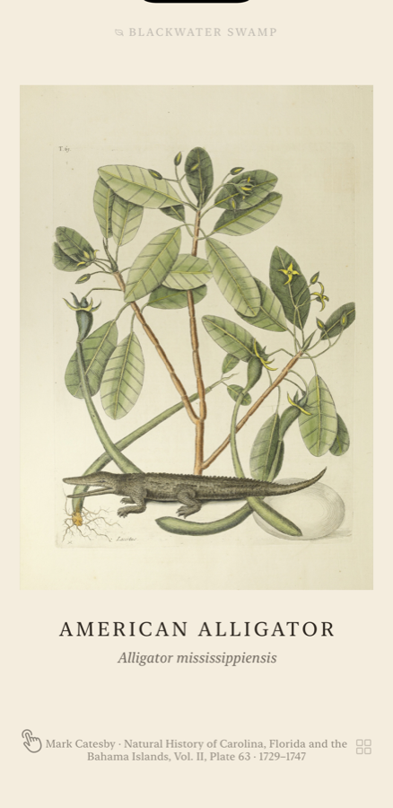
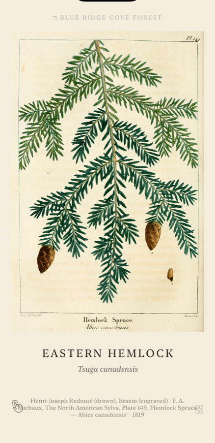
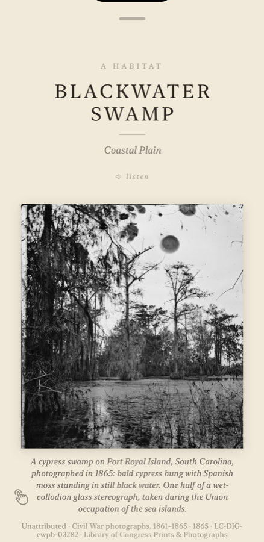
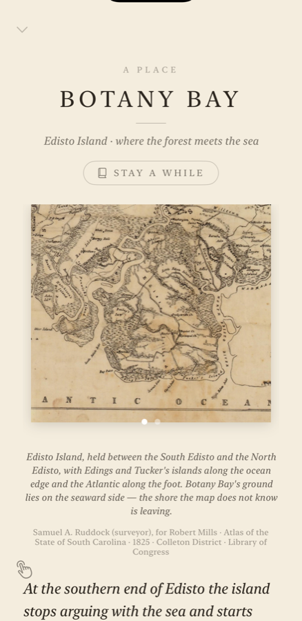
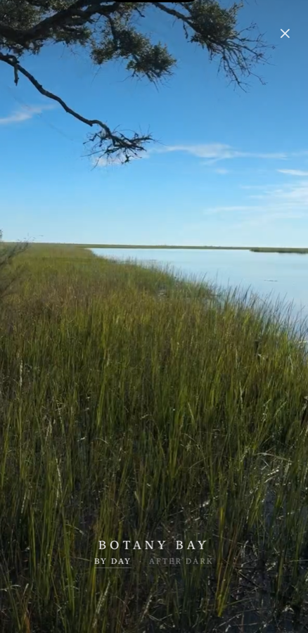
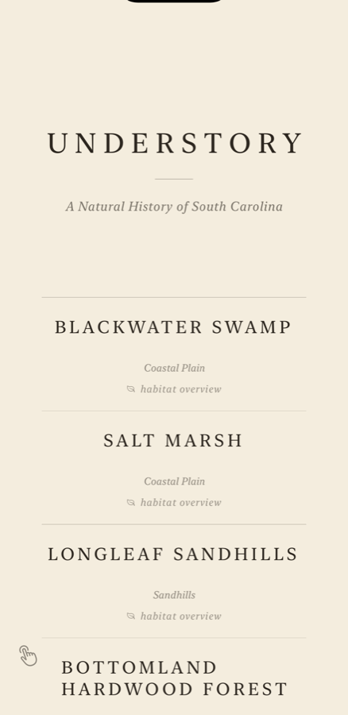
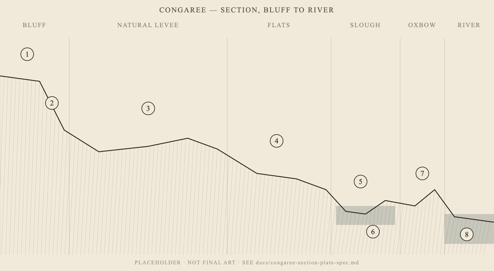

For iPhone
A natural history of South Carolina
In private beta

What it is
Understory is a natural history of one state, built out of the engraved plates its naturalists actually left behind — Catesby, Audubon, Michaux, Wilson — and the sounds the ground actually makes. You turn pages. Each plate has a voice and a texture under your thumb. Nothing is redrawn, nothing is stock, and where something is missing the book says so instead of filling the gap.
It is organised the way the state is: five regions, fourteen habitats, and a growing set of named places where those habitats meet on real ground — Congaree, Francis Marion, Botany Bay on Edisto, Jones Gap in the mountains.
Three questions
The book asks three different things and answers each with a different kind of image. Keeping them apart is most of the design.

What is it?
The period plate of the creature itself, with the artist, the engraver, the work and the year under it. This hemlock was drawn by Henri-Joseph Redouté and engraved by Bessin for Michaux's North American Sylva in 1819.

What does this kind of ground look like?
A period view of the habitat as a type. This cypress swamp was photographed on Port Royal Island in 1865, on a wet-collodion glass plate — the right register, and genuinely this state.

Where is this ground?
Robert Mills surveyed every district of South Carolina and published the atlas in 1825. Each place leads with his sheet, cropped tight to its own ground, with the whole district one swipe away.
Stay a while
The pages stay in the period. But each place has a window you can open onto it as it is now — real footage of that ground, with the sound that was recorded alongside it. Where there is a real recording, the book's own synthesised soundscape steps aside entirely, because a built bed played over a real marsh would be the one dishonest sound in the app.
Botany Bay was filmed twice, at midday and at moonrise. The window shows you the hour you are actually in, solved from the date rather than guessed from a clock — and you can override it and go look at the moon on the marsh at noon.


The rule
Every illustration is a genuine public-domain plate with its artist, engraver, work, year and archive recorded. Nothing is redrawn in a period style and passed off as period work.
Extinct species have no recording and never will. Where a call cannot exist, the soundscape holds a gap rather than substituting a cousin's voice. The Carolina parakeet and the passenger pigeon are both silent on purpose.
Provisional sounds and stand-in footage carry a note in the data saying what they really are, so nothing borrowed can ship unnoticed.
A species that lives somewhere but has no plate yet is still listed — unlinked, in the same hand. A place should not appear to hold only what we happen to have drawn.

So far
It grows in small rounds rather than all at once — a few plates at a time, each with its source traced, its sound found or honestly marked, and its text checked. The most recent additions are the eastern hemlock and the tulip poplar, so the mountains finally have a canopy.
The hemlock is the book's first loss still in progress. The chestnut, the Carolina parakeet and the passenger pigeon are already finished; the hemlock woolly adelgid is killing hemlock across these mountains now, and warming the streams the brook trout need.
Sources
Mark Catesby, The Natural History of Carolina, Florida and the Bahama Islands (1729–1747). John James Audubon, The Birds of America. François André Michaux, The North American Sylva (1819). Alexander Wilson, American Ornithology. Robert Mills, Atlas of the State of South Carolina (1825). Picturesque America (1872–74). The Library of Congress, the Biodiversity Heritage Library, and the Internet Archive.
Field recordings come from iNaturalist, xeno-canto and Freesound under CC0 and CC-BY licences, each credited by recordist inside the app, alongside original recordings made on the ground.